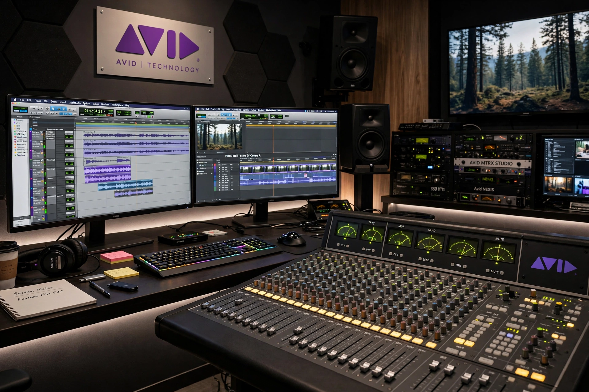

Avid Technology, Inc. is an American technology company best known for Media Composer, the non-linear editing system that transformed film and television post-production, and Pro Tools, the dominant digital audio workstation in professional recording and film sound.

| Avid Technology | |
|---|---|
| Founded | 1987, by Bill Warner |
| Headquarters | Burlington, Massachusetts, US |
| Products | Media Composer, Pro Tools, Sibelius |
| Owner | STG (acquired 2023) |
Founded in 1987, Avid demonstrated its first non-linear editor in 1988 and shipped Media Composer in 1989; films edited on it soon dominated Academy Award categories. Avid acquired Digidesign (maker of Pro Tools) in 1995, Pinnacle Systems in 2005, and Sibelius notation software. After years as a public company (NASDAQ: AVID), private equity firm STG took Avid private in 2023 in a deal valued around $1.4 billion.
Pro Tools · Non-linear editing
Recreated from memory.